pkgs <- c("SingleCellExperiment", "ggthemes", "ggpubr", "vroom", "jhtools",
"patchwork", "cowplot", "tidyverse", "dplyr", "ComplexHeatmap",
"viridis", "factoextra", "pheatmap", "RColorBrewer", "circlize",
"jhuanglabHyperion")
suppressMessages(conflicted::conflict_scout())
for (pkg in pkgs){
suppressPackageStartupMessages(library(pkg, character.only = T))
}
res_dir <- "./results/figure1" %>% checkdir
dat_dir <- "./data" %>% checkdir
config_dir <- "./config" %>% checkdir
#colors config
config_fn <- glue::glue("{config_dir}/configs.yaml")
stype3_cols <- jhtools::show_me_the_colors(config_fn, "stype3")
ctype10_cols <- jhtools::show_me_the_colors(config_fn, "cell_type_new")
#read in data
coldat <- readr::read_csv(glue::glue("{dat_dir}/sce_coldata.csv"))
sinfo <- readr::read_csv(glue::glue("{dat_dir}/metadata_sinfo.csv"))
metadata <- readr::read_rds(glue::glue("{dat_dir}/metadata.rds"))
seu_sub <- readr::read_rds(glue::glue("{dat_dir}/sce_sub_fig1f.rds"))
#theme
plot.theme <- theme_bw() + theme(panel.grid.major = element_blank(),
panel.grid.minor = element_blank())
axistheme1 <- theme(axis.title.y = element_text(size = 7),
axis.text.y = element_text(size = 7),
axis.title.x = element_blank(),
axis.ticks.x = element_blank(),
axis.text.x = element_blank())
axistheme2 <- theme(axis.title.y = element_text(size = 8),
axis.text.y = element_text(size = 6),
axis.title.x = element_blank(),
axis.text.x = element_blank(),
axis.line = element_line(linewidth = .4, colour = "black"),
axis.ticks.y = element_line(linewidth = .4, colour = "black"),
axis.ticks.x = element_blank(),
legend.position = "none")figure1
figure1a
sp_info <- coldat %>% dplyr::select(sample_id, stype3) %>% distinct() %>%
remove_rownames() %>% dplyr::mutate(group = ifelse(stype3 != "Paracancerous" &
stype3 != "Normal", "Tumor", stype3))
sp_info$group <- factor(sp_info$group, levels = c("Tumor", "Paracancerous", "Normal"))
sp_info$stype3 <- factor(sp_info$stype3, levels = c("Punc_liver", "Punc_pancreas",
"Surgery_after_chemo", "Surgery_without_chemo",
"Paracancerous", "Normal"))
# plot
p <- ggplot(sp_info, aes(x = group, fill = stype3)) +
geom_bar(position = "stack", width = 0.8) +
scale_fill_manual(values = stype3_cols) +
scale_y_continuous(breaks = scales::pretty_breaks(n = 5)) +
theme_classic() +
theme(axis.text.x = element_text(angle = 60, hjust = 1),
axis.title.x = element_blank(),
axis.title.y = element_blank(),
legend.title = element_blank()) +
geom_text(aes(label = ..count..), stat = "count", position = position_stack(vjust = 0.5))
ggsave(glue::glue("{res_dir}/fig1a_sample_info.pdf"), width = 3, height = 6)
p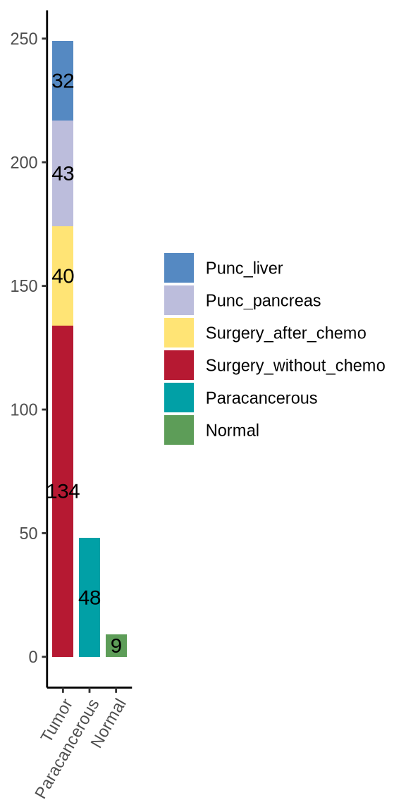
figure1d
meta_all <- readr::read_csv(glue::glue("{dat_dir}/metadata_sinfo.csv"))
c_mat_lst <- readr::read_rds(glue::glue("{dat_dir}/heatmap_1d_mat_lst.rds"))
c_mat <- c_mat_lst[[1]]
cluster_prop <- c_mat_lst[[2]]
# lineage markers
anno_marks <- c("a_smooth", "CD14", "CD33", "CD16", "CD163", "Pan_Keratin", "CD11b",
"CD31", "CD11c", "FoxP3", "CD4", "E_Cadherin", "CD68",
"CD20", "CD8a", "Collagen1", "CD3", "HLA_DR","CD25",
"Vimentin", "CCR6", "B7_H4", "Ki67")
# cell grouping and ordering data for heatmap
# the ordering should NOT be changed to avoid bugs of ComplexHeatmap package!!
epiendo_cells <- c("Epithelial tumor cell", "Normal epithelial cell", "Endothelial cell")
immu_stroma_cells <- c("DC", "MDSC", "Monocyte", "B cell", "CD8+ T cell", "CD4+ T cell",
"HLA-DR-CD163- mp", "HLA-DR-CD163+ mp", "HLA-DR+CD163- mp",
"HLA-DR+CD163+ mp", "HLA-DR-CD163- MMT", "HLA-DR+CD163- MMT",
"HLA-DR+CD163+ MMT", "PSC", "myoCAF", "Col1+ CAF")
other_cells <- c("CCR6+ cell", "B7-H4+ cell", "Ki67+ cell", "Vim+ cell", "Unknown")
grouping_celltype <- data.frame(cell_type_new = c(epiendo_cells, immu_stroma_cells, other_cells),
meta_celltype = c(rep("Epi-endo", 3), rep("Immune-stroma", 16), rep("Others", 5)))
heatmap_dat <- c_mat[grouping_celltype$cell_type_new, anno_marks]
split_row <- grouping_celltype$meta_celltype
split_row <- factor(split_row, levels = c("Epi-endo", "Immune-stroma", "Others"))
meta_colors <- c("#B61932", "#568AC2", "#BEA278")
labels_meta <- c("Epi-endo", "Immune-stroma", "Others")
labels_meta2 <- c("Epithelial & endothelial Cells", "Immune & stroma Cells", "Other Cells")
block_anno = rowAnnotation(Type = anno_block(gp = gpar(fill = meta_colors),
labels = labels_meta,
labels_gp = gpar(col = "white", fontsize = 10)))
col_fun = circlize::colorRamp2(c(-1, 0, 1, 2, 3), c("#5658A5", "#8BCDA3", "#FBF4AA", "#F16943", "#9D1A44"))
prop_data <- cluster_prop[ ,3]
names(prop_data) <- cluster_prop[ ,1]
# bar annotation
meta_all1 <- meta_all %>% dplyr::mutate(base_excision_eval = case_when(
nchar(base_excision_eval) == 4 ~ "BRPC_LAPC",
TRUE ~ base_excision_eval))
coldat <- left_join(coldat, meta_all1[, c("sample_id", "base_excision_eval")])
group_dat <- coldat %>% group_by(cell_type_new) %>%
dplyr::mutate(allcount = n()) %>%
group_by(cell_type_new, base_excision_eval, allcount) %>%
summarise(count = n()) %>%
na.omit() %>% dplyr::mutate(frac = count / allcount)
group_dat$cell_type_order <- factor(group_dat$cell_type_new,
levels = rev(grouping_celltype$cell_type_new))
prop_data <- prop_data[match(rownames(heatmap_dat), names(prop_data))]
cell_amount_anno = ComplexHeatmap::rowAnnotation(
frac = anno_barplot(prop_data,
gp = gpar(fill = ctype10_cols[match(rownames(heatmap_dat), names(ctype10_cols))])))
text_color <- scales::muted(ctype10_cols[match(rev(grouping_celltype$cell_type_new), names(ctype10_cols))], l = 50)
# bubble plot
group_dat$base_order <- factor(group_dat$base_excision_eval,
levels = c("RPC", "BRPC_LAPC", "MPC"))
pcirc <- ggplot(group_dat, aes(y = cell_type_order, x = base_order)) +
geom_point(aes(color = cell_type_order, alpha = frac, size = count)) +
scale_color_manual(values = ctype10_cols) +
scale_size(range = c(1, 15), name = "Fraction of clinical in celltype group") +
theme(
axis.text.y = element_text(color = text_color),
# not officially supported but works anyway, one may also seek for ggtext solution
axis.text.x = element_text(angle = 90, vjust = 0.5, hjust = 1),
panel.grid.major = element_blank(),
panel.grid.minor = element_blank(),
panel.background = element_blank(),
axis.line = element_line(colour = "black"),
legend.position = "none",
axis.title.x = element_blank(),
axis.title.y = element_blank()
) +
expand_limits(y = c(1, length(levels(group_dat$cell_type_order)) + 0.8))
# main heatmap
ht_main <- Heatmap(heatmap_dat, name = "matrix", heatmap_legend_param = list(title = "exp"),
cluster_row_slices = F, col = col_fun, row_km = 0,
cluster_rows = F, show_heatmap_legend = F, left_annotation = block_anno,
split = split_row, show_row_names = F, row_title = NULL,
show_row_dend = F, show_column_dend = F)
ht <- attach_annotation(ht_main, cell_amount_anno, side = "right")
ht <- draw(ht)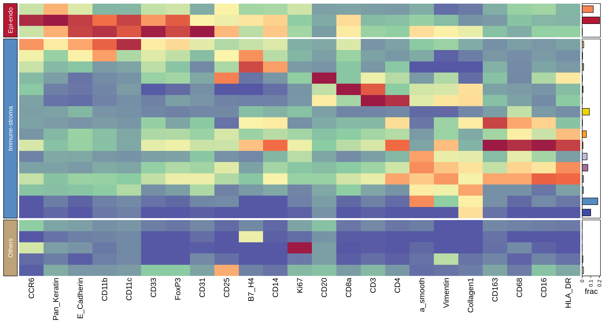
grob <- grid.grabExpr(draw(ht))
# legends
heat_legend <- Legend(title = "Intensity", at = -1:3, col_fun = col_fun)
meta_legend <- Legend(labels = labels_meta2, title = "Cell Categories",
legend_gp = gpar(fill = meta_colors))
merged_legends <- packLegend(heat_legend, meta_legend)
# merged plot
p <- ggdraw() +
draw_plot(pcirc, 0, 0.033, 0.27, 0.95) + ## x, y, width, height
draw_plot(grob, 0.275, 0.001, 0.52, 0.98) +
draw_plot(grid.grabExpr(draw(merged_legends)), 0.84, 0.4, 0.06, 0.08)
ggsave(glue::glue("{res_dir}/fig1d_heatmap_main_anno.pdf"), p, height = 7, width = 13)
p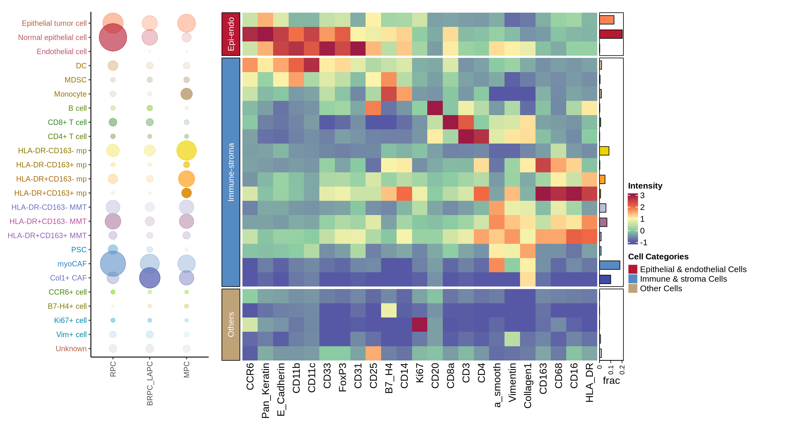
figure1d_sup2
func_marks <- c("CD45", "CD45RO", "EGFR", "PD_L1", "LAG_3", "Vista", "CCR6", "Arginase_1", "PD1",
"Vimentin", "B7_H4", "Granzyme_B", "Ki67", "Caspase3")
heatmap_dat <- c_mat[grouping_celltype$cell_type_new, func_marks]
colnames(heatmap_dat) <- c("CD45", "CD45RO", "EGFR", "PD-L1", "LAG3", "VISTA", "CCR6", "Arg-1", "PD-1",
"Vim", "B7-H4", "GZMB", "Ki-67", "Casp-3")
ht_func <- Heatmap(heatmap_dat, name = "matrix", heatmap_legend_param = list(title = "exp"),
cluster_row_slices = F, col = col_fun, row_km = 0,
cluster_rows = F, show_heatmap_legend = T, #left_annotation = block_anno,
show_row_names = T,#split = split_row, row_title = NULL,
show_row_dend = F, show_column_dend = F)
pdf(glue::glue("{res_dir}/fig1dsup2_heatmap_sup_functional.pdf"), height = 6, width = 5)
draw(ht_func)
d <- dev.off()
ht_func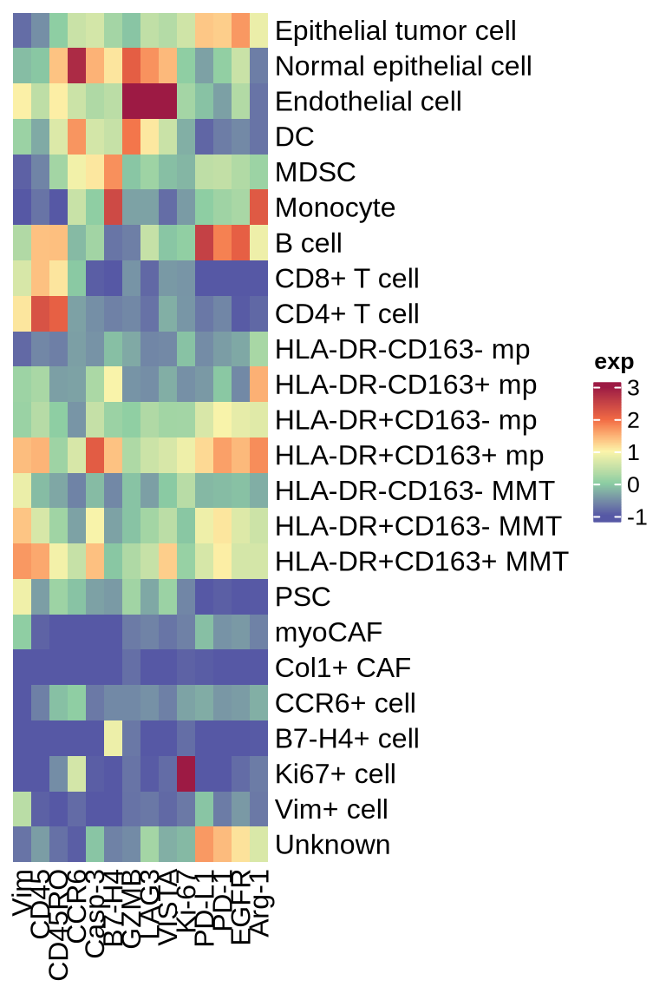
figure1e
celltypes <- unique(coldat$cell_type_new)
cld <- coldat %>% group_by(stype3) %>% dplyr::mutate(n_cell = n()) %>%
group_by(cell_type_new, .add = T) %>% dplyr::mutate(cell_ratio = n()/n_cell)
df <- cld %>% ungroup() %>% dplyr::select(stype3, cell_type_new, cell_ratio) %>%
dplyr::distinct() %>% pivot_wider(names_from = cell_type_new, values_from = cell_ratio) %>%
dplyr::mutate(across(where(is.numeric), replace_na, 0)) %>%
pivot_longer(celltypes, names_to = "cell_type", values_to = "ratio")
df$stype3<- factor(df$stype3, levels = c("Surgery_without_chemo", "Surgery_after_chemo", "Punc_pancreas", "Punc_liver", "Paracancerous", "Normal"))
stack <- function (df = df) {
p <- ggplot(df, mapping = aes(stype3, ratio*100, fill = cell_type)) +
geom_bar(stat = 'identity', position = position_stack(), width = 0.8) +
labs(x = '', y = 'Cell percentage') +
theme_bw() + scale_fill_manual(values = ctype10_cols) +
theme(axis.title = element_text(size = 13),
axis.text.x = element_text(angle = 60, hjust = 1),
axis.title.x = element_blank(),
axis.ticks.x = element_blank(),
axis.text.y = element_text(color = "black"),
axis.ticks = element_line(size = 0.25),
strip.text = element_text(size = 8),
strip.background = element_rect(fill = NA, color = NA),
legend.position = "none") +
scale_y_continuous(expand = c(0,0))
return(p)
}
p <- stack(df = df)
ggsave(glue::glue("{res_dir}/fig1e_stype2_stackplot.pdf"), p, width = 2, height = 3, dpi = 300)
p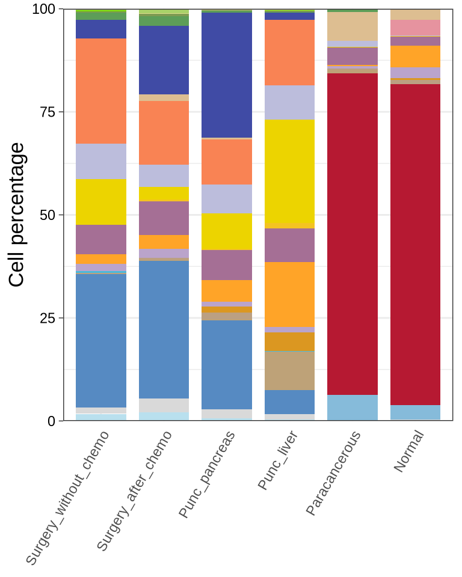
figure1f
p <- plot2d(seu_sub, color.by = "stype3", show.cluser.id = F, size = 0.01,
item.use = c("t_sne1", "t_sne2")) + scale_color_manual(values = stype3_cols) +
guides(colour = guide_legend(override.aes = list(size = 2)))
ggsave(glue::glue("{res_dir}/fig1f_tsne_stype3_300000.png"), p, dpi = 300, width = 7, height = 5)
print(p)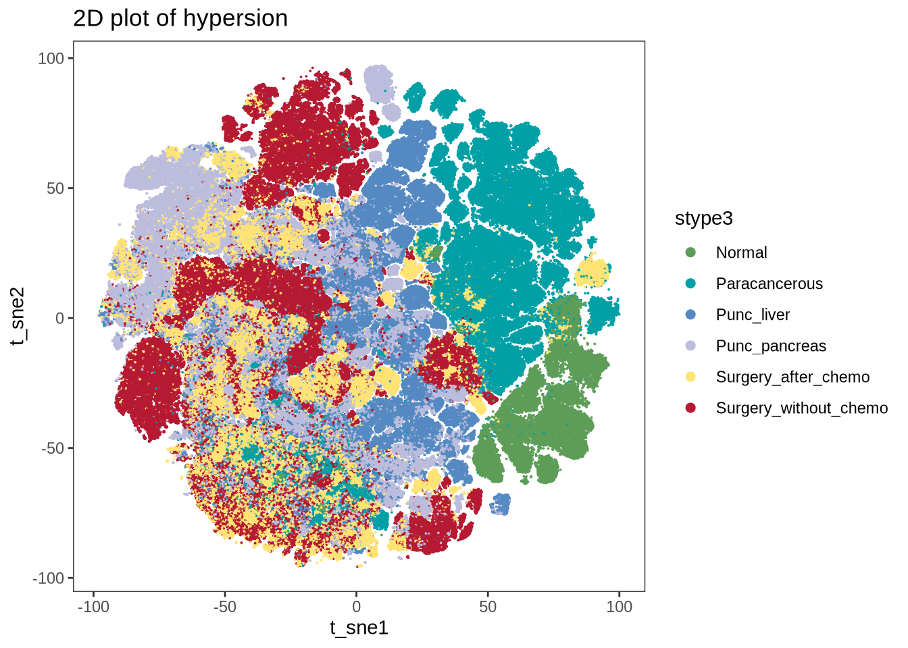
figure1sup4
df <- readr::read_csv(glue::glue("{dat_dir}/cell_score_stat.csv"))
my_comparisons <- list(c("Normal","Paracancerous"), c("Normal", "Surgery_without_chemo"),
c("Paracancerous", "Surgery_without_chemo"),
c("Surgery_without_chemo", "Surgery_after_chemo"),
c("Punc_pancreas", "Punc_liver"))
df$stype3 <- factor(df$stype3, levels = c("Surgery_without_chemo", "Surgery_after_chemo", "Punc_pancreas","Punc_liver", "Paracancerous", "Normal"))
p1 <- (ggplot(df, aes_string(x = "stype3", y = "cell_density")) +
geom_boxplot(outlier.shape= NA, lwd = 0.2, color = "#000000", fill = stype3_cols) +
ylim(0, 1.9) +
plot.theme +
theme(legend.position = "none") +
axistheme1+
stat_compare_means(method = "wilcox.test",
comparisons = my_comparisons,
hide.ns = TRUE,
bracket.size = 0.2,
vjust = 0.8,
aes(label = ..p.signif..)))
p2 <- (ggplot(df, aes_string(x = "stype3", y = "score_col")) +
geom_boxplot(outlier.shape= NA, lwd = 0.2, color = "#000000", fill = stype3_cols) +
ylim(-2, 8) +
plot.theme +
theme(legend.position = "none") +
axistheme1+
stat_compare_means(method = "wilcox.test",
comparisons = my_comparisons,
hide.ns = TRUE,
bracket.size = 0.2,
vjust = 0.8,
aes(label = ..p.signif..)))
p3 <- (ggplot(df, aes_string(x = "stype3", y = "DispersionScore")) +
geom_boxplot(outlier.shape= NA, lwd = 0.2, color = "#000000", fill = stype3_cols) +
ylim(0.3, 1.4) +
plot.theme +
theme(legend.position = "none") +
axistheme1+
stat_compare_means(method = "wilcox.test",
comparisons = my_comparisons,
hide.ns = TRUE,
bracket.size = 0.2,
vjust = 0.8,
aes(label = ..p.signif..)))
p <- p2|p1|p3
ggsave(glue::glue("{res_dir}/fig1sup4_stype3_area_ecce_boxplot.pdf"), p, width = 7, height = 5)
print(p)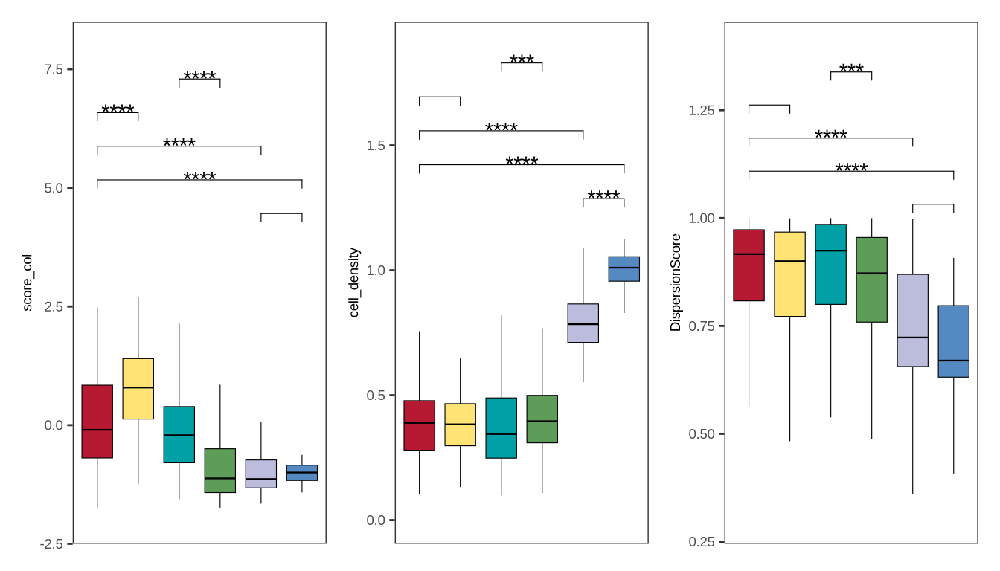
figure1sup5a
# theme
plot.theme <- theme_bw() + theme(panel.grid.major = element_blank(),
panel.grid.minor = element_blank())
axistheme2 <- theme(axis.title.y = element_text(size = 8),
axis.text.y = element_text(size = 6),
axis.title.x = element_blank(),
axis.text.x = element_blank(),
axis.line = element_line(linewidth = .4, colour = "black"),
axis.ticks.y = element_line(linewidth = .4, colour = "black"),
axis.ticks.x = element_blank(),
legend.position = "none")
# plot function
boxplot_clinical <- function (df = df, sel_group = "stage", celltype = "DC", axistheme = axistheme1, wd = .3,
ylim = 400, label_y = c(0.4,0.5,0.6), compare = compare_list, fil_col = NULL) {
#colors <- list(color2, color3)
# dot_colors <- list(dot_color2, dot_color3)
plot.theme <- theme_bw() + theme(panel.grid.major = element_blank(),
panel.grid.minor = element_blank())
comparisons_n <- length(compare) + 2
p <- ggplot(df, aes_string(sel_group, celltype)) +
geom_boxplot(outlier.shape = NA, width = wd,
lwd = 0.2, color = "#000000", aes(fill = !!sym(sel_group))) +
scale_y_continuous(limits=c(0, ylim), oob = scales::rescale_none) +
scale_fill_manual(values = fil_col) +
plot.theme + axistheme +
stat_compare_means(method = "t.test", comparisons = compare,
hide.ns = TRUE, bracket.size = 0.2, vjust = 0.6,
label.y = label_y, tip.length = 0.01,
aes(label = ..p.signif..))
return(p)
}
# all immnue cells
immu_cols <- c("Macrophage_HLADRp","MDSC", "Macrophage_HLADRp_CD163p",
"MMT_HLADRp_CD163p", "DC", "MMT_HLADRp", "Monocyte",
"MMT_HLADRn_CD163n", "CD8T", "Macrophage_CD163p",
"CD4T", "Macrophage_HLADRn_CD163n", "Bcell")
# tumor_para_normal
sampleinfo <- sinfo %>% dplyr::select(sample_id, stype2) %>% distinct() %>%
dplyr::filter(stype2 %in% c("normal", "paracancerous", "tumor"))
tp_df <- metadata[["cell_ratio"]] %>% inner_join(sampleinfo, by = "sample_id") %>%
dplyr::mutate(Epithelial = Epithelial_normal + Epithelial_tumor) %>%
dplyr::mutate(Fibroblast = PSC + mCAF + CAF_col1p) %>%
rowwise() %>% dplyr::mutate(immunecells = sum(c_across(all_of(immu_cols)))) %>%
dplyr::mutate(stype2 = case_when(stype2 == "tumor" ~ "Tumor",
stype2 == "normal" ~ "Normal",
stype2 == "paracancerous" ~ "Paracancerous"))
my_comparisons_tp <- list(c("Normal","Paracancerous"), c("Normal", "Tumor"), c("Paracancerous", "Tumor"))
tp_df$stype2<- factor(tp_df$stype2, levels = c("Normal", "Paracancerous", "Tumor"))
fil_c <- c("Tumor" = "#BC3C29FF", "Paracancerous" = "#0072B5FF", "Normal" = "#E18727FF")
p1 <- boxplot_clinical(df = tp_df, sel_group = "stype2", celltype = "Epithelial_tumor", fil_col = fil_c, wd = .4,
axistheme = axistheme2, ylim = 0.7, label_y = c(0.5,0.55,0.6), compare = my_comparisons_tp)
p2 <- boxplot_clinical(df = tp_df, sel_group = "stype2", celltype = "mCAF", fil_col = fil_c, wd = .4,
axistheme = axistheme2, ylim = 0.8, label_y = c(0.6,0.65,0.7), compare = my_comparisons_tp)
p3 <- boxplot_clinical(df = tp_df, sel_group = "stype2", celltype = "CAF_col1p", fil_col = fil_c, wd = .4,
axistheme = axistheme2, ylim = 0.3, label_y = c(0.2,0.23,0.26), compare = my_comparisons_tp)
p4 <- boxplot_clinical(df = tp_df, sel_group = "stype2", celltype = "Macrophage_HLADRn_CD163n", fil_col = fil_c, wd = .4,
axistheme = axistheme2, ylim = 0.4, label_y = c(0.3,0.33,0.36), compare = my_comparisons_tp)
p5 <- boxplot_clinical(df = tp_df, sel_group = "stype2", celltype = "MMT_HLADRn_CD163n", fil_col = fil_c, wd = .4,
axistheme = axistheme2, ylim = 0.2, label_y = c(0.1,0.13,0.16), compare = my_comparisons_tp)
p6 <- boxplot_clinical(df = tp_df, sel_group = "stype2", celltype = "CD8T", fil_col = fil_c, wd = .4,
axistheme = axistheme2, ylim = 0.1, label_y = c(0.05,0.07,0.09), compare = my_comparisons_tp)
p7 <- boxplot_clinical(df = tp_df, sel_group = "stype2", celltype = "CD4T", fil_col = fil_c, wd = .4,
axistheme = axistheme2, ylim = 0.005, label_y = c(0.0005,0.0006,0.0007), compare = my_comparisons_tp)
p8 <- boxplot_clinical(df = tp_df, sel_group = "stype2", celltype = "Monocyte", fil_col = fil_c, wd = .4,
axistheme = axistheme2, ylim = 0.03, label_y = c(0.02,0.023,0.026), compare = my_comparisons_tp)
p9 <- boxplot_clinical(df = tp_df, sel_group = "stype2", celltype = "immunecells", fil_col = fil_c, wd = .4,
axistheme = axistheme2, ylim = 1, label_y = c(0.8,0.85,0.9), compare = my_comparisons_tp)
p <- (p1|p2|p3|p9|plot_spacer())/(p4|p5|p6|p7|p8)
ggsave(glue::glue("{res_dir}/figure1sup5a_cellprop_tumor_para.pdf"), p, width = 6, height = 4)
p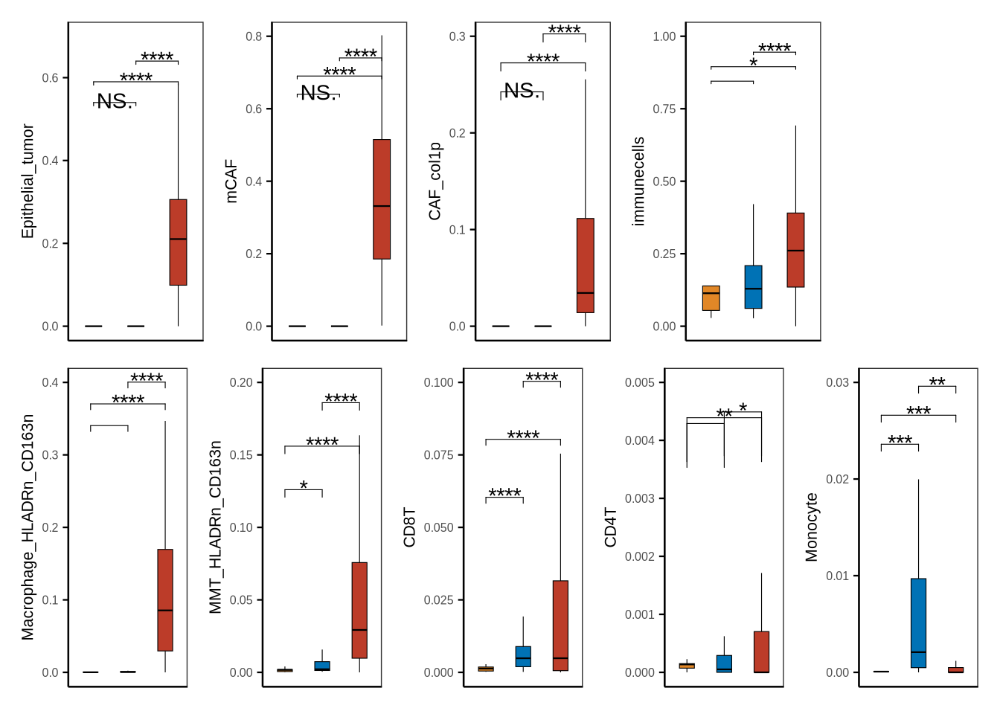
figure1sup5b
# stages_tme
stages_tme <- metadata[["stages_tme"]] %>% dplyr::select(patient_id, stage) %>%
mutate(patient_id = glue::glue("{patient_id}_pdac"))
st_df <- metadata[["cell_ratio"]] %>% inner_join(stages_tme, by = c("sample_id" = "patient_id"))
my_comparisons_st <- list(c("RPC", "BRPC_LAPC"), c("RPC", "MPC"), c("BRPC_LAPC", "MPC"))
st_df$stage <- factor(st_df$stage, levels = c("MPC", "BRPC_LAPC", "RPC") %>% rev())
fil_c <- c("MPC" = "#BC3C29FF", "BRPC_LAPC" = "#0072B5FF", "RPC" = "#E18727FF")
p1 <- boxplot_clinical(df = st_df, sel_group = "stage", celltype = "Macrophage_HLADRn_CD163n", fil_col = fil_c, wd = .4,
axistheme = axistheme2, ylim = 0.5, label_y = c(0.35,0.4,0.45), compare = my_comparisons_st)
p2 <- boxplot_clinical(df = st_df, sel_group = "stage", celltype = "mCAF", fil_col = fil_c, wd = .4,
axistheme = axistheme2, ylim = 1.0, label_y = c(0.7,0.8,0.9), compare = my_comparisons_st)
p <- p1|p2
ggsave(glue::glue("{res_dir}/figure1sup5b_cellprop_stages_tme.pdf"), p, width = 6, height = 4)
p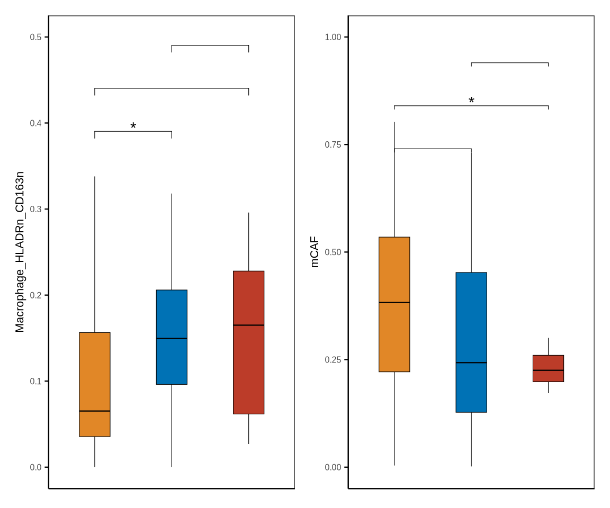
figure1sup5c
# mpc_primary_metastasis
sampleinfo <- sinfo %>% dplyr::select(sample_id, stype2) %>% distinct() %>%
dplyr::filter(stype2 %in% c("puncture_pdac", "puncture_liver"))
mpm_df <- metadata[["cell_ratio"]] %>% inner_join(sampleinfo, by = "sample_id") %>%
dplyr::mutate(stype2 = case_when(stype2 == "puncture_pdac" ~ "Biopsy pancreas",
stype2 == "puncture_liver" ~ "Biopsy liver"))
my_comparisons_mpm <- list(c("Biopsy pancreas", "Biopsy liver"))
mpm_df$stype2<- factor(mpm_df$stype2, levels = c("Biopsy pancreas", "Biopsy liver") %>% rev())
fil_c <- c("Biopsy pancreas" = "#BC3C29FF", "Biopsy liver" = "#0072B5FF")
p1 <- boxplot_clinical(df = mpm_df, sel_group = "stype2", celltype = "CD8T", fil_col = fil_c,
axistheme = axistheme2, ylim = 0.025, label_y = 0.015, compare = my_comparisons_mpm)
p2 <- boxplot_clinical(df = mpm_df, sel_group = "stype2", celltype = "Macrophage_HLADRn_CD163n", fil_col = fil_c,
axistheme = axistheme2, ylim = 0.6, label_y = 0.5, compare = my_comparisons_mpm)
p3 <- boxplot_clinical(df = mpm_df, sel_group = "stype2", celltype = "mCAF", fil_col = fil_c,
axistheme = axistheme2, ylim = 0.8, label_y = 0.7, compare = my_comparisons_mpm)
p <- p1|p2|p3
ggsave(glue::glue("{res_dir}/figure1sup5c_cellprop_metastasis.pdf"), p, width = 3.6, height = 4)
p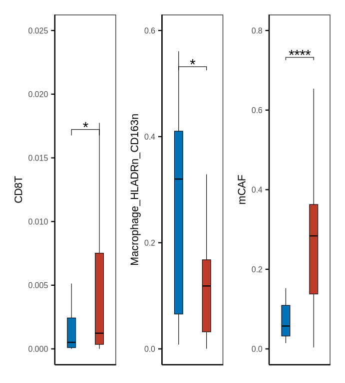
figure1sup5d
neoadj_vs_direct_surgery1 <- metadata[["neoadj_vs_direct_surgery"]] %>% dplyr::select(patient_id, treatment_type) %>%
mutate(patient_id = glue::glue("{patient_id}_pdac"))
neoadj_vs_direct_surgery2 <- metadata[["neoadj_vs_direct_surgery"]] %>% dplyr::select(patient_id, treatment_type) %>%
mutate(patient_id = glue::glue("{patient_id}_ca"))
neoadj_vs_direct_surgery <- rbind(neoadj_vs_direct_surgery1, neoadj_vs_direct_surgery2) %>%
dplyr::mutate(treatment_type = case_when(treatment_type == "surgery_after_chemo" ~ "Surgery after chemo",
treatment_type == "direct_surgery" ~ "Upfront surgery"))
nds_df <- metadata[["cell_ratio"]] %>% inner_join(neoadj_vs_direct_surgery, by = c("sample_id" = "patient_id"))
my_comparisons_nds <- list(c("Upfront surgery", "Surgery after chemo"))
nds_df$treatment_group<- factor(nds_df$treatment_type, levels = c("Upfront surgery", "Surgery after chemo")%>% rev())
fil_c <- c("Upfront surgery" = "#BC3C29FF", "Surgery after chemo" = "#0072B5FF")
p1 <- boxplot_clinical(df = nds_df, sel_group = "treatment_group", celltype = "Epithelial_tumor", fil_col = fil_c,
axistheme = axistheme2, ylim = 0.7, label_y = 0.6, compare = my_comparisons_nds)
p2 <- boxplot_clinical(df = nds_df, sel_group = "treatment_group", celltype = "CAF_col1p", fil_col = fil_c,
axistheme = axistheme2, ylim = 0.5, label_y = 0.4, compare = my_comparisons_nds)
p3 <- boxplot_clinical(df = nds_df, sel_group = "treatment_group", celltype = "MMT_HLADRp", fil_col = fil_c,
axistheme = axistheme2, ylim = 0.4, label_y = 0.3, compare = my_comparisons_nds)
p4 <- boxplot_clinical(df = nds_df, sel_group = "treatment_group", celltype = "CD4T", fil_col = fil_c,
axistheme = axistheme2, ylim = 0.03, label_y = 0.02, compare = my_comparisons_nds)
p5 <- boxplot_clinical(df = nds_df, sel_group = "treatment_group", celltype = "Macrophage_HLADRn_CD163n", fil_col = fil_c,
axistheme = axistheme2, ylim = 0.4, label_y = 0.3, compare = my_comparisons_nds)
p <- p1|p2|p3|p4|p5
ggsave(glue::glue("{res_dir}/figure1sup5d_cellprop_chemo.pdf"), p, width = 6, height = 4)
p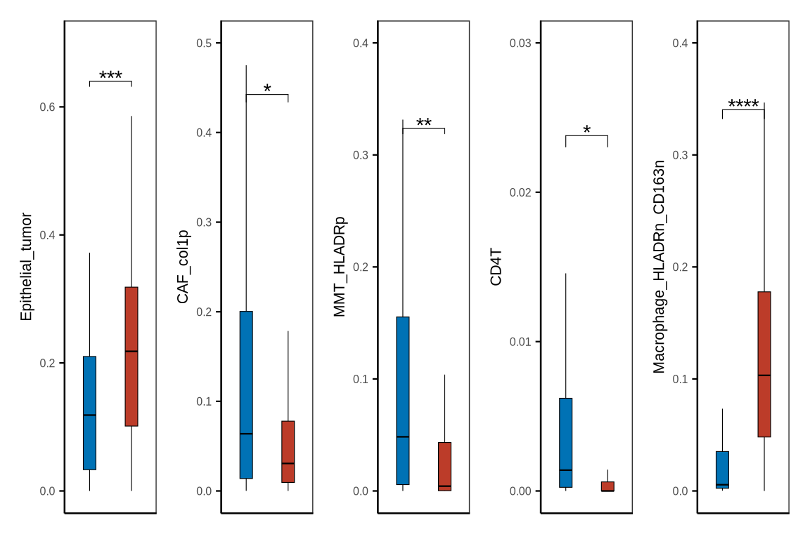